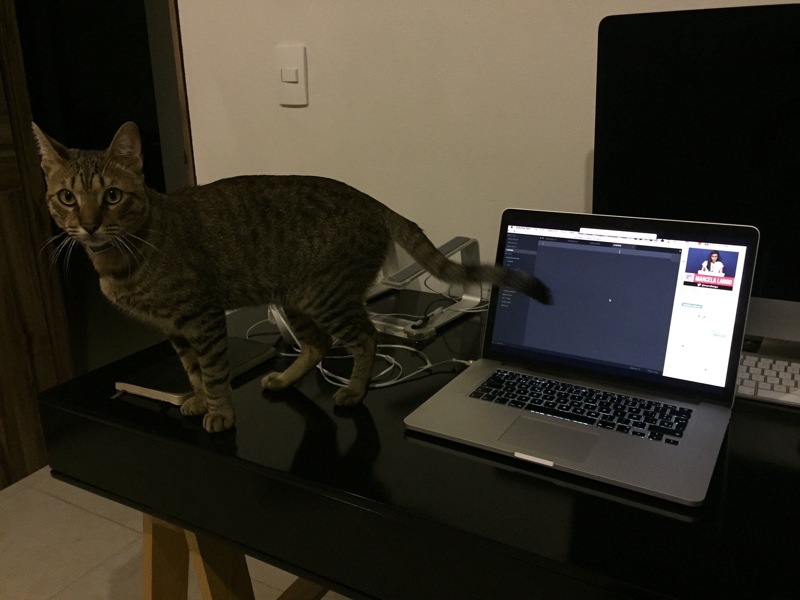

Git, el gato
2014, Instagram

Raza
Domestico MexicanoColor
AtigradoNacimiento
~30 de Octubre del 2014Descripción
Git el gato es un gato domestico mexicano, que desafortunada o afortunadamente fue abandonado por su madre biológica. Fue rescatado por Maru Lango cuando regresaba a su casa del cine mirando una pelicula.
Dirfruta de subirse a los escritorios y de llenar de pelo su silloón (Porque el sillón, al contrario de lo que sus humanos puedan pensar, es suyo)
+ Mas Información